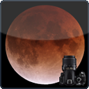

|
 Aide Lunar Eclipse Maestro(1.3.3v1)
Eclipses de Lune Ce logiciel restera gratuit, mais vous pouvez toujours me faire un don et m’encourager pour ce travail. |
NouveautésPrenez connaissance des dernières fonctionnalités.
ExplorerLunar Eclipse MaestroFenêtre PrincipaleMenusConfiguration InitialePréparatifs pour l’EclipseFormat des Fichiers de ScriptConfiguration APNNotesDépannageRaccourcis et AstucesRemerciementsActualitésPrenez connaissance des dernières mises à jour et des moyens pour obtenir plus d’information. |
|||